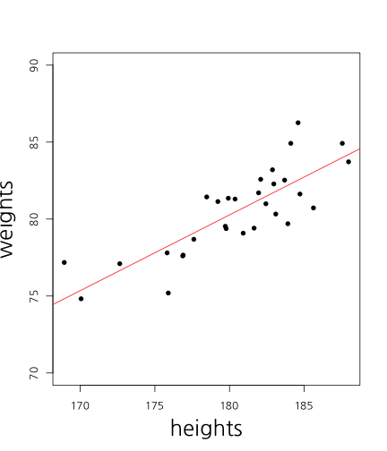
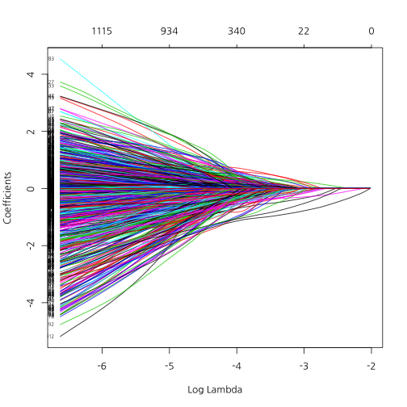

김형준
Analytic Director / (주) 퀀트랩 / kim@mindscale.kr


## [1] 1

## [1] 0.4885042

| Estimate | Std. Error | t value | Pr(>|t|) | |
|---|---|---|---|---|
| (Intercept) | -8.29 | 11.74 | -0.71 | 0.49 |
| heights | 0.49 | 0.07 | 7.56 | 0.00 |
cor(weights, heights)
## [1] 0.8194181
키가 1cm 증가하면 몸무게는 .49kg 증가

## [1] 0.8194181

## [1] 0.09818667
| Estimate | Std. Error | t value | Pr(>|t|) | |
|---|---|---|---|---|
| (Intercept) | -27.49 | 12.81 | -2.15 | 0.04 |
| iq | 0.15 | 0.06 | 2.68 | 0.01 |
| heights | 0.52 | 0.06 | 8.72 | 0.00 |


mobile <- read.csv('mobile2014.csv', stringsAsFactors = F)
dim(mobile)
## [1] 2000 7
names(mobile)
## [1] "X" "Title" "Author" "ReviewID" "Texts" "YMD"
## [7] "Sentiment"
table(mobile$Sentiment)
##
## 0 1
## 1000 1000
library(tm)
corpus <- Corpus(VectorSource(mobile$Texts))
## 제거할 단어 목록 확인
stopwords()
## [1] "i" "me" "my" "myself" "we"
## [6] "our" "ours" "ourselves" "you" "your"
## [11] "yours" "yourself" "yourselves" "he" "him"
## [16] "his" "himself" "she" "her" "hers"
## [21] "herself" "it" "its" "itself" "they"
## [26] "them" "their" "theirs" "themselves" "what"
## [31] "which" "who" "whom" "this" "that"
## [36] "these" "those" "am" "is" "are"
## [41] "was" "were" "be" "been" "being"
## [46] "have" "has" "had" "having" "do"
## [51] "does" "did" "doing" "would" "should"
## [56] "could" "ought" "i'm" "you're" "he's"
## [61] "she's" "it's" "we're" "they're" "i've"
## [66] "you've" "we've" "they've" "i'd" "you'd"
## [71] "he'd" "she'd" "we'd" "they'd" "i'll"
## [76] "you'll" "he'll" "she'll" "we'll" "they'll"
## [81] "isn't" "aren't" "wasn't" "weren't" "hasn't"
## [86] "haven't" "hadn't" "doesn't" "don't" "didn't"
## [91] "won't" "wouldn't" "shan't" "shouldn't" "can't"
## [96] "cannot" "couldn't" "mustn't" "let's" "that's"
## [101] "who's" "what's" "here's" "there's" "when's"
## [106] "where's" "why's" "how's" "a" "an"
## [111] "the" "and" "but" "if" "or"
## [116] "because" "as" "until" "while" "of"
## [121] "at" "by" "for" "with" "about"
## [126] "against" "between" "into" "through" "during"
## [131] "before" "after" "above" "below" "to"
## [136] "from" "up" "down" "in" "out"
## [141] "on" "off" "over" "under" "again"
## [146] "further" "then" "once" "here" "there"
## [151] "when" "where" "why" "how" "all"
## [156] "any" "both" "each" "few" "more"
## [161] "most" "other" "some" "such" "no"
## [166] "nor" "not" "only" "own" "same"
## [171] "so" "than" "too" "very"
stopwords("SMART")
## [1] "a" "a's" "able" "about"
## [5] "above" "according" "accordingly" "across"
## [9] "actually" "after" "afterwards" "again"
## [13] "against" "ain't" "all" "allow"
## [17] "allows" "almost" "alone" "along"
## [21] "already" "also" "although" "always"
## [25] "am" "among" "amongst" "an"
## [29] "and" "another" "any" "anybody"
## [33] "anyhow" "anyone" "anything" "anyway"
## [37] "anyways" "anywhere" "apart" "appear"
## [41] "appreciate" "appropriate" "are" "aren't"
## [45] "around" "as" "aside" "ask"
## [49] "asking" "associated" "at" "available"
## [53] "away" "awfully" "b" "be"
## [57] "became" "because" "become" "becomes"
## [61] "becoming" "been" "before" "beforehand"
## [65] "behind" "being" "believe" "below"
## [69] "beside" "besides" "best" "better"
## [73] "between" "beyond" "both" "brief"
## [77] "but" "by" "c" "c'mon"
## [81] "c's" "came" "can" "can't"
## [85] "cannot" "cant" "cause" "causes"
## [89] "certain" "certainly" "changes" "clearly"
## [93] "co" "com" "come" "comes"
## [97] "concerning" "consequently" "consider" "considering"
## [101] "contain" "containing" "contains" "corresponding"
## [105] "could" "couldn't" "course" "currently"
## [109] "d" "definitely" "described" "despite"
## [113] "did" "didn't" "different" "do"
## [117] "does" "doesn't" "doing" "don't"
## [121] "done" "down" "downwards" "during"
## [125] "e" "each" "edu" "eg"
## [129] "eight" "either" "else" "elsewhere"
## [133] "enough" "entirely" "especially" "et"
## [137] "etc" "even" "ever" "every"
## [141] "everybody" "everyone" "everything" "everywhere"
## [145] "ex" "exactly" "example" "except"
## [149] "f" "far" "few" "fifth"
## [153] "first" "five" "followed" "following"
## [157] "follows" "for" "former" "formerly"
## [161] "forth" "four" "from" "further"
## [165] "furthermore" "g" "get" "gets"
## [169] "getting" "given" "gives" "go"
## [173] "goes" "going" "gone" "got"
## [177] "gotten" "greetings" "h" "had"
## [181] "hadn't" "happens" "hardly" "has"
## [185] "hasn't" "have" "haven't" "having"
## [189] "he" "he's" "hello" "help"
## [193] "hence" "her" "here" "here's"
## [197] "hereafter" "hereby" "herein" "hereupon"
## [201] "hers" "herself" "hi" "him"
## [205] "himself" "his" "hither" "hopefully"
## [209] "how" "howbeit" "however" "i"
## [213] "i'd" "i'll" "i'm" "i've"
## [217] "ie" "if" "ignored" "immediate"
## [221] "in" "inasmuch" "inc" "indeed"
## [225] "indicate" "indicated" "indicates" "inner"
## [229] "insofar" "instead" "into" "inward"
## [233] "is" "isn't" "it" "it'd"
## [237] "it'll" "it's" "its" "itself"
## [241] "j" "just" "k" "keep"
## [245] "keeps" "kept" "know" "knows"
## [249] "known" "l" "last" "lately"
## [253] "later" "latter" "latterly" "least"
## [257] "less" "lest" "let" "let's"
## [261] "like" "liked" "likely" "little"
## [265] "look" "looking" "looks" "ltd"
## [269] "m" "mainly" "many" "may"
## [273] "maybe" "me" "mean" "meanwhile"
## [277] "merely" "might" "more" "moreover"
## [281] "most" "mostly" "much" "must"
## [285] "my" "myself" "n" "name"
## [289] "namely" "nd" "near" "nearly"
## [293] "necessary" "need" "needs" "neither"
## [297] "never" "nevertheless" "new" "next"
## [301] "nine" "no" "nobody" "non"
## [305] "none" "noone" "nor" "normally"
## [309] "not" "nothing" "novel" "now"
## [313] "nowhere" "o" "obviously" "of"
## [317] "off" "often" "oh" "ok"
## [321] "okay" "old" "on" "once"
## [325] "one" "ones" "only" "onto"
## [329] "or" "other" "others" "otherwise"
## [333] "ought" "our" "ours" "ourselves"
## [337] "out" "outside" "over" "overall"
## [341] "own" "p" "particular" "particularly"
## [345] "per" "perhaps" "placed" "please"
## [349] "plus" "possible" "presumably" "probably"
## [353] "provides" "q" "que" "quite"
## [357] "qv" "r" "rather" "rd"
## [361] "re" "really" "reasonably" "regarding"
## [365] "regardless" "regards" "relatively" "respectively"
## [369] "right" "s" "said" "same"
## [373] "saw" "say" "saying" "says"
## [377] "second" "secondly" "see" "seeing"
## [381] "seem" "seemed" "seeming" "seems"
## [385] "seen" "self" "selves" "sensible"
## [389] "sent" "serious" "seriously" "seven"
## [393] "several" "shall" "she" "should"
## [397] "shouldn't" "since" "six" "so"
## [401] "some" "somebody" "somehow" "someone"
## [405] "something" "sometime" "sometimes" "somewhat"
## [409] "somewhere" "soon" "sorry" "specified"
## [413] "specify" "specifying" "still" "sub"
## [417] "such" "sup" "sure" "t"
## [421] "t's" "take" "taken" "tell"
## [425] "tends" "th" "than" "thank"
## [429] "thanks" "thanx" "that" "that's"
## [433] "thats" "the" "their" "theirs"
## [437] "them" "themselves" "then" "thence"
## [441] "there" "there's" "thereafter" "thereby"
## [445] "therefore" "therein" "theres" "thereupon"
## [449] "these" "they" "they'd" "they'll"
## [453] "they're" "they've" "think" "third"
## [457] "this" "thorough" "thoroughly" "those"
## [461] "though" "three" "through" "throughout"
## [465] "thru" "thus" "to" "together"
## [469] "too" "took" "toward" "towards"
## [473] "tried" "tries" "truly" "try"
## [477] "trying" "twice" "two" "u"
## [481] "un" "under" "unfortunately" "unless"
## [485] "unlikely" "until" "unto" "up"
## [489] "upon" "us" "use" "used"
## [493] "useful" "uses" "using" "usually"
## [497] "uucp" "v" "value" "various"
## [501] "very" "via" "viz" "vs"
## [505] "w" "want" "wants" "was"
## [509] "wasn't" "way" "we" "we'd"
## [513] "we'll" "we're" "we've" "welcome"
## [517] "well" "went" "were" "weren't"
## [521] "what" "what's" "whatever" "when"
## [525] "whence" "whenever" "where" "where's"
## [529] "whereafter" "whereas" "whereby" "wherein"
## [533] "whereupon" "wherever" "whether" "which"
## [537] "while" "whither" "who" "who's"
## [541] "whoever" "whole" "whom" "whose"
## [545] "why" "will" "willing" "wish"
## [549] "with" "within" "without" "won't"
## [553] "wonder" "would" "would" "wouldn't"
## [557] "x" "y" "yes" "yet"
## [561] "you" "you'd" "you'll" "you're"
## [565] "you've" "your" "yours" "yourself"
## [569] "yourselves" "z" "zero"
dtm <- DocumentTermMatrix(corpus,
control = list(tolower = T,
removePunctuation = T,
removeNumbers = T,
stopwords = stopwords("SMART"),
weighting = weightTfIdf))
## Warning in weighting(x): empty document(s): 1948
dtm
## <<DocumentTermMatrix (documents: 2000, terms: 8446)>>
## Non-/sparse entries: 46461/16845539
## Sparsity : 100%
## Maximal term length: 132
## Weighting : term frequency - inverse document frequency (normalized) (tf-idf)
library(glmnet)
X <- as.matrix(dtm)
Y <- mobile$Sentiment
res.lm <- glmnet(X, Y, family = "binomial", lambda = 0)
coef.lm <- coef(res.lm)[,1]
pos.lm <- coef.lm[coef.lm > 0]
neg.lm <- coef.lm[coef.lm < 0]
pos.lm <- sort(pos.lm, decreasing = T)
neg.lm <- sort(neg.lm, decreasing = F)
pos.lm[1:20]
## aboutbattery absorption accustomed accommodate allthe
## 1085.0779 971.8079 742.7851 736.4887 680.7802
## anywhereno allconclusion afterthought beautifully agt
## 673.7496 658.7255 501.8829 491.0924 438.5957
## accidentially blog alongside anymorei acclaimed
## 370.4009 359.6093 346.5438 279.9606 254.9961
## amps advocate brightnesscall accelerometer accurate
## 253.5091 229.8871 202.4650 197.5923 197.3163
neg.lm[1:20]
## adverse accomplish apology boasts applaud artists
## -337.1834 -330.4808 -298.6760 -256.1969 -253.5539 -217.8384
## addresses ainol amazoni accesses arrange blocks
## -216.7636 -213.2872 -202.4802 -191.3860 -181.3013 -179.3567
## averaging comparisons adddelete annoys aarp admitted
## -177.2297 -176.4454 -173.5037 -168.7699 -167.4885 -163.6020
## aka amazonit
## -156.0933 -154.2843
set.seed(12345)
res.lasso <- cv.glmnet(X, Y, family = "binomial", alpha = 1,
nfolds = 4, type.measure = "class")
plot(res.lasso)

plot(res.lasso$glmnet.fit, xvar = "lambda")

options(scipen = 100)
coef.lasso <- coef(res.lasso, s = "lambda.min")[,1]
pos.lasso <- coef.lasso[coef.lasso > 0]
neg.lasso <- coef.lasso[coef.lasso < 0]
pos.lasso <- sort(pos.lasso, decreasing = T)
neg.lasso <- sort(neg.lasso, decreasing = F)
pos.lasso[1:20]
## news sharpness section implementation amoled
## 38.577474 19.924116 17.276675 14.786139 14.263770
## youve autofocus great whatsapp monster
## 11.408438 10.652642 9.939520 9.620485 8.232943
## love responsiveness swiping kitkat eyes
## 7.835211 6.849303 6.713517 6.351620 5.576048
## pro pair fits perfect easy
## 5.325080 5.165146 4.919954 4.671299 4.651886
neg.lasso[1:20]
## addresses pushed promising consistently repeatedly
## -9.274913 -8.947030 -7.709165 -6.557389 -5.723836
## return versions money wakes utter
## -5.028760 -4.801251 -4.104239 -4.060679 -3.854104
## elses back zip contacted swindled
## -3.561807 -3.413399 -3.284574 -3.154823 -3.122682
## sucks july horrible slow received
## -3.117836 -3.014597 -2.965226 -2.871529 -2.654189
set.seed(12345)
res.ridge <- cv.glmnet(X, Y, family = "binomial", alpha = 0,
nfolds = 4, type.measure = "class")
plot(res.ridge)

plot(res.ridge$glmnet.fit, xvar = "lambda")

coef.ridge <- coef(res.ridge, s = "lambda.min")[,1]
pos.ridge <- coef.ridge[coef.ridge > 0]
neg.ridge <- coef.ridge[coef.ridge < 0]
pos.ridge <- sort(pos.ridge, decreasing = T)
neg.ridge <- sort(neg.ridge, decreasing = F)
pos.ridge[1:20]
## anywhereno brightnessto yourselfi wifig whistle
## 2.739847 2.738926 2.738648 2.738635 2.738580
## waistband commentsapps vertical thatbottom copied
## 2.738508 2.738440 2.738419 2.738313 2.738093
## speedcons spacealso smallest cutter sleeping
## 2.738082 2.737937 2.737801 2.737719 2.737640
## screenvery detailing puffin doable phonetips
## 2.737409 2.737377 2.737238 2.737078 2.737075
neg.ridge[1:20]
## slowness limiting groove engage discontinuing
## -1.500915 -1.500909 -1.500890 -1.500862 -1.500859
## apology carpet disgruntled explanation hypothesize
## -1.449195 -1.448927 -1.448633 -1.448471 -1.448232
## whomever voltage toi jumping scuff
## -1.448227 -1.448198 -1.448162 -1.448128 -1.448125
## returnclaim loosely refurbishes reflect paused
## -1.448084 -1.448064 -1.448048 -1.448016 -1.447995
set.seed(12345)
res.elastic <- cv.glmnet(X, Y, family = "binomial", alpha = .5,
nfolds = 4, type.measure="class")
plot(res.elastic)

plot(res.elastic$glmnet.fit, xvar = "lambda")

coef.elastic <- coef(res.elastic, s = "lambda.min")[,1]
pos.elastic <- coef.elastic[coef.elastic > 0]
neg.elastic <- coef.elastic[coef.elastic < 0]
pos.elastic <- sort(pos.elastic, decreasing = T)
neg.elastic <- sort(neg.elastic, decreasing = F)
pos.elastic[1:20]
## news amoled sharpness intrusive implementation
## 27.487451 10.570031 10.333007 9.966970 8.992294
## great youve love kitkat eyes
## 6.975481 6.270957 5.106715 4.591255 4.382721
## whatsapp perfect easy fits remote
## 4.193411 3.499910 3.440100 3.432532 3.380695
## pro impressed windows fast loves
## 3.188608 3.149368 3.116624 3.035995 2.988360
neg.elastic[1:20]
## pushed addresses wakes return promising
## -7.409465 -4.587790 -4.123647 -4.070836 -3.998956
## repeatedly consistently money back contacted
## -3.940290 -3.238517 -3.099030 -2.986000 -2.903110
## sucks utter versions horrible told
## -2.556260 -2.391758 -2.374289 -2.330850 -2.312851
## refund slow wouldnt terrible received
## -2.273095 -2.250336 -2.126634 -2.101997 -2.027309
library(tm.plugin.sentiment)
senti.lm <- polarity(dtm, names(pos.lm), names(neg.lm))
senti.lasso <- polarity(dtm, names(pos.lasso), names(neg.lasso))
senti.ridge <- polarity(dtm, names(pos.ridge), names(neg.ridge))
senti.elastic <- polarity(dtm, names(pos.elastic), names(neg.elastic))
senti.lm <- polarity(dtm, names(pos.lm), names(neg.lm))
senti.lasso <- polarity(dtm, names(pos.lasso), names(neg.lasso))
senti.ridge <- polarity(dtm, names(pos.ridge), names(neg.ridge))
senti.elastic <- polarity(dtm, names(pos.elastic), names(neg.elastic))
senti.lm.b <- ifelse(senti.lm > 0, 1, 0)
senti.lasso.b <- ifelse(senti.lasso > 0, 1, 0)
senti.ridge.b <- ifelse(senti.ridge > 0, 1, 0)
senti.elastic.b <- ifelse(senti.elastic > 0, 1, 0)
library(caret)
confusionMatrix(senti.lm.b, mobile$Sentiment)
## Confusion Matrix and Statistics
##
## Reference
## Prediction 0 1
## 0 962 535
## 1 38 464
##
## Accuracy : 0.7134
## 95% CI : (0.693, 0.7331)
## No Information Rate : 0.5003
## P-Value [Acc > NIR] : < 0.00000000000000022
##
## Kappa : 0.4266
## Mcnemar's Test P-Value : < 0.00000000000000022
##
## Sensitivity : 0.9620
## Specificity : 0.4645
## Pos Pred Value : 0.6426
## Neg Pred Value : 0.9243
## Prevalence : 0.5003
## Detection Rate : 0.4812
## Detection Prevalence : 0.7489
## Balanced Accuracy : 0.7132
##
## 'Positive' Class : 0
##
confusionMatrix(senti.lasso.b, mobile$Sentiment)
## Confusion Matrix and Statistics
##
## Reference
## Prediction 0 1
## 0 978 47
## 1 18 952
##
## Accuracy : 0.9674
## 95% CI : (0.9587, 0.9748)
## No Information Rate : 0.5008
## P-Value [Acc > NIR] : < 0.00000000000000022
##
## Kappa : 0.9348
## Mcnemar's Test P-Value : 0.0005147
##
## Sensitivity : 0.9819
## Specificity : 0.9530
## Pos Pred Value : 0.9541
## Neg Pred Value : 0.9814
## Prevalence : 0.4992
## Detection Rate : 0.4902
## Detection Prevalence : 0.5138
## Balanced Accuracy : 0.9674
##
## 'Positive' Class : 0
##
confusionMatrix(senti.ridge.b, mobile$Sentiment)
## Confusion Matrix and Statistics
##
## Reference
## Prediction 0 1
## 0 984 20
## 1 16 979
##
## Accuracy : 0.982
## 95% CI : (0.9752, 0.9874)
## No Information Rate : 0.5003
## P-Value [Acc > NIR] : <0.0000000000000002
##
## Kappa : 0.964
## Mcnemar's Test P-Value : 0.6171
##
## Sensitivity : 0.9840
## Specificity : 0.9800
## Pos Pred Value : 0.9801
## Neg Pred Value : 0.9839
## Prevalence : 0.5003
## Detection Rate : 0.4922
## Detection Prevalence : 0.5023
## Balanced Accuracy : 0.9820
##
## 'Positive' Class : 0
##
confusionMatrix(senti.elastic.b, mobile$Sentiment)
## Confusion Matrix and Statistics
##
## Reference
## Prediction 0 1
## 0 977 61
## 1 18 934
##
## Accuracy : 0.9603
## 95% CI : (0.9508, 0.9684)
## No Information Rate : 0.5
## P-Value [Acc > NIR] : < 0.00000000000000022
##
## Kappa : 0.9206
## Mcnemar's Test P-Value : 0.000002297
##
## Sensitivity : 0.9819
## Specificity : 0.9387
## Pos Pred Value : 0.9412
## Neg Pred Value : 0.9811
## Prevalence : 0.5000
## Detection Rate : 0.4910
## Detection Prevalence : 0.5216
## Balanced Accuracy : 0.9603
##
## 'Positive' Class : 0
##
mobile.test <- read.csv("mobile2014_test.csv", stringsAsFactors = F)
dim(mobile.test)
## [1] 1000 7
names(mobile.test)
## [1] "X" "Title" "Author" "ReviewID" "Texts" "YMD"
## [7] "Sentiment"
table(mobile.test$Sentiment)
##
## 0 1
## 500 500
corpus <- Corpus(VectorSource(mobile.test$Texts))
dtm.test <- DocumentTermMatrix(corpus,
control = list(tolower = T,
removePunctuation = T,
removeNumbers = T,
stopwords = stopwords("SMART"),
weighting = weightTfIdf,
dictionary = Terms(dtm)))
## Warning in weighting(x): empty document(s): 883
## Warning in weighting(x): unreferenced term(s): downloading aah aaps
## abombada aboutbattery aboutprice abroad abruptly absolutamente absulotly
## accelerometer accent accepting accessed accesses accessibility
## accessoriesi accessoriesin accidentially acclaimed acclimating accomplish
## accomplishing accordinglyupgrading accounts accurate accurateif
## accurateremote accustomed ace achieve aclarar acquainted acted action
## activating activitate activity actuall actualmente acurate adapt adapted
## adapter adaptor adddelete addedusing addict additionally additions adds
## adefect adept adhesive adición adjustable adjustmentglad adjustments
## admiral admitted admittedly admitting adn adobe adult advances advantage
## adventure adverse advise advocate affects afffordable affordability
## affordablelove afghanistan afternooni afterthought againin againsend
## againso againthe againthey againthird agan ages agethe aggravated
## aggravation agil agitate agreeing agreements agrivation agt
## agtsplitrefirefox ahhhh aids ailments aiming airport airvoice
## airvoicewireless aka alao albums alert alertembedding alertplaceholder
## algo align alike alittle alittleit allconclusion allmetal allot allplease
## allrate allreally allways alongside alpha alreadyi alta alter altered
## alternate alternatives alternativesthis althought altogether aluminium
## amaizing amateur amaze amazingscreen amazingthe amazomcom amazonafter
## amazonit amazonok amazonso amazonthe ambulance américa americaits amfm
## amolid ampliamente amps amused analyze anazon ancient anctipated andi
## andif andriod androidbased androidify androidmemory androidwide androit
## andwont ane angle angles angola angular animal announcements announces
## annoy annoys anouther ans answerbefore ant antennae anticipated antiquated
## antique antutu anuncia anuncio anxiously anymorei anymorethis anyonenow
## anyoneunfortunately anyplace anytime anywayim anywayso anywhereno
## anywhereon aparently aperture apkinstall aplicasiones aplications apni
## apology appcamera appfitbit applaude appleprosvery applicationoutstanding
## appmgriii appnone approve approx appsbuilt appsit appsive appsserices
## appsservices appsthe appstore appthat archived areabest areathsnks
## aredroid argentina argentinas arguably arirang arising arms aroundguess
## arrange arrival arrivalwould arrogant arrows arthritis artwork asaving
## asia asiathanks asíit aspect assisted assistedø assisting
## associationextremely assume assuming assurance assure assuredly astounding
## atadsjbe atat athe athms ativities atoz atrix attached attack
## attentiverecommend attgoes attit attnokia attok attracted
## attsamsungmotorolasprintetc attzero atvpdkikxder audible audífonos
## audiophile audiovideoi aunt aus australian authenticate authorized authors
## autocad autofocus automail automation autonomy availablecan
## availablefunction availablegalaxy availablethis avalon averaging avid
## avoids awake awaythe awesomeamazon awesomei awesomely awesomeno
## awesometexting awewater awfulthey awkwardly awsome baby backand backed
## backi backit backlight backlit backlo backplease backside backthe backthis
## backward backwards backwardthe badplease badthe baffled bait baited bajo
## baked balanced balls ballsif bandwagon bandwitch bang bankanother banks
## barbados barcode bare barnyard barometer barrel barrier barsdots base
## batch baterry bath batt batter batterly batterys batterysaving
## batterysince batterythe batterywhen battle batts bayi bayreuth bbmcontacts
## bbs bday beach beam bear beaten beating becsuse bedefinitely bedrooms
## bedside bedtime beforefairly beforesamsung beg begini beginner beginners
## begs behalf behave behavior behaviors believeme belive bell bellevue
## belongs belowfantastic belowthis beltim benchmark benchmarks beneath
## benton bestbuy bestno betterdont betteri betterinstead betternote bevel
## bezel bgcolor biased bigdoes bighas billing bind bio bionicsamsung bistro
## bits bla blacberry blackberryi blackberrys blackberrythe blackblack
## blacked blackfor blackwireless blamed blames bland blanket blanks
## blanksave blanksince blazingly bleeding blemish bless blessing blinding
## blink bloatapps blocking blocks blockswhen blocky blog blogare blood
## bloody bloquea blow blueif blur blurb blured blurred blurry blurs blury
## blutoothit bmp boardapparently boarding boat bodies bodygiven bodymotorola
## bodysamsung bogus bold bolts bomb bone bonkers boom booster boosters
## booted borrow borrowing bosnia bossi bothers bottomfiring bou bounced
## bounds boxbatterydo boxed boxes boxso boy boyfriends brace bracketing
## brain brained brakes braking brans bravo brazilrecommende breast breath
## breather breathtaking bribe brigade brighter brightif brightnesscall
## brightnessto brightpicture brights brilliance bringing british bro
## broadcasts broadest broked brokeni brooklyn brotherwho brown browsers
## browsingthe brto bruised bubble buck budgetminded buds buffered buildi
## buildin buildquality builtmost builtone bull bullet bummer bundled buried
## burned burner burning burns businees businessi businessman butch buts
## butter buttonsi buttonwonderful butts buyagain buyersin buyfast buyi
## buynext buzz buzzers buzzing byeno bypass caboose cabsince cad caharger
## caint cajahasta cake caked cal calculate calculations calderon calendars
## calender calibration calificación california callnot callsconscamera
## callsecondary callsø callssamsung cam cámara camcorder camcorderbuilt
## camer cameraand cameraas camerabright camerafeels camerafinal cameragood
## camerait cameraits cameral cameranot camerasimply camerasometime
## camperthis camrea canada canbought cancel cancelar canceled cancelled
## cancels cannibalize canpurchase cantidad cantotally capableno capacitive
## capacity capgb captured características carateristics cardart cardit
## cardphone cardthis cardtransfering caredfor caribbean carlos carma
## carribbean carriermy carriersubsidized carrierswith carries carrydo
## cartoon casebut casehttpwwwamazoncomgpproductbhvvikrefcmcrrypprdttlsol
## casethe cash casual cat catalina catastrophic catcherr catches catching
## caught caution cdata cellphonesfinally celluar celualr centers centrobuy
## centura certainty chage chamber champ changealso changedthe channelfollow
## channels chaos character characteristic characteristics chargedall
## chargedsome chargeit chargeonly chargerbut chargeris chargeroverall
## chargerport chargerstarted chargerthis chargewhen charginga chargingi
## chargingthe charms chasor chattering cheapcellphonereplacement
## cheapfeeling cheaphowever cheapit cheapo cheek cheep cheers cheesy
## cherokee chews chimes chipped chipset chock choicea choicebut chooses
## choosing choreit chrips chromebook chromecast chucking cingular circa
## circle cities ciudad clans clarify clarityanother clarityit claro clash
## classeasy classi classic cleaner clearlyalso clearno clearwhat cleverly
## clicked client cliff clipdivstyleheight clipdivstyleheighthpx clipping
## clockbecause clocks clone clones clot cloudy clue clumsyexcellent
## clunkiest cnet coating coding coldstartstorage collar collect collection
## colorado colorblind colorslimmer colorused colours comapnies comaptibility
## combat combines comcast comercial comersi comical comings command
## commendable commentsapps commitment communicatedi commutethe commuting
## compañía companydaniel companyif compares comparisongreat compartment
## compartments compatibilityclose compelled compensate competitioncons
## competitionhardware competitive competitor complainti complaintthe
## compleat completamente complexso complicated compliment compliments comply
## comprehensive compromise compromising computadoras computerandroid
## comunicate concepto concernnot concert conclude concluded concludes
## conclussionstheres concrete condeson condición conditionall conditioni
## conditionloads conducts confidence configurable configure configuring
## confirmation conformed confort confusing confusingits conrol consequences
## consgood considerable considers consthe consthis constructed consume
## consumerfriendly consumption contac contactsand contender contento
## contents contextsince continual continually continuing continuous
## contracted contracting contracy contrary contrto contry convenientalso
## convenientgreat conveniently conversationnokia conversations conversions
## converts convoluted convoy cookie coolness copypaste corning corporate
## corporation corrections correctphone
senti.lm.test <- polarity(dtm.test, names(pos.lm), names(neg.lm))
senti.lasso.test <- polarity(dtm.test, names(pos.lasso), names(neg.lasso))
senti.ridge.test <- polarity(dtm.test, names(pos.ridge), names(neg.ridge))
senti.elastic.test <- polarity(dtm.test, names(pos.elastic), names(neg.elastic))
senti.lm.b.test <- ifelse(senti.lm.test > 0, 1, 0)
senti.lasso.b.test <- ifelse(senti.lasso.test > 0, 1, 0)
senti.ridge.b.test <- ifelse(senti.ridge.test > 0, 1, 0)
senti.elastic.b.test <- ifelse(senti.elastic.test > 0, 1, 0)
confusionMatrix(senti.lm.b.test, mobile.test$Sentiment)
## Confusion Matrix and Statistics
##
## Reference
## Prediction 0 1
## 0 445 301
## 1 55 198
##
## Accuracy : 0.6436
## 95% CI : (0.6131, 0.6734)
## No Information Rate : 0.5005
## P-Value [Acc > NIR] : < 0.00000000000000022
##
## Kappa : 0.2869
## Mcnemar's Test P-Value : < 0.00000000000000022
##
## Sensitivity : 0.8900
## Specificity : 0.3968
## Pos Pred Value : 0.5965
## Neg Pred Value : 0.7826
## Prevalence : 0.5005
## Detection Rate : 0.4454
## Detection Prevalence : 0.7467
## Balanced Accuracy : 0.6434
##
## 'Positive' Class : 0
##
confusionMatrix(senti.lasso.b.test, mobile.test$Sentiment)
## Confusion Matrix and Statistics
##
## Reference
## Prediction 0 1
## 0 447 86
## 1 45 411
##
## Accuracy : 0.8675
## 95% CI : (0.8448, 0.8881)
## No Information Rate : 0.5025
## P-Value [Acc > NIR] : < 0.00000000000000022
##
## Kappa : 0.7352
## Mcnemar's Test P-Value : 0.0004744
##
## Sensitivity : 0.9085
## Specificity : 0.8270
## Pos Pred Value : 0.8386
## Neg Pred Value : 0.9013
## Prevalence : 0.4975
## Detection Rate : 0.4520
## Detection Prevalence : 0.5389
## Balanced Accuracy : 0.8677
##
## 'Positive' Class : 0
##
confusionMatrix(senti.ridge.b.test, mobile.test$Sentiment)
## Confusion Matrix and Statistics
##
## Reference
## Prediction 0 1
## 0 444 85
## 1 56 414
##
## Accuracy : 0.8589
## 95% CI : (0.8357, 0.8799)
## No Information Rate : 0.5005
## P-Value [Acc > NIR] : < 0.0000000000000002
##
## Kappa : 0.7177
## Mcnemar's Test P-Value : 0.01837
##
## Sensitivity : 0.8880
## Specificity : 0.8297
## Pos Pred Value : 0.8393
## Neg Pred Value : 0.8809
## Prevalence : 0.5005
## Detection Rate : 0.4444
## Detection Prevalence : 0.5295
## Balanced Accuracy : 0.8588
##
## 'Positive' Class : 0
##
confusionMatrix(senti.elastic.b.test, mobile.test$Sentiment)
## Confusion Matrix and Statistics
##
## Reference
## Prediction 0 1
## 0 454 82
## 1 39 416
##
## Accuracy : 0.8779
## 95% CI : (0.8559, 0.8976)
## No Information Rate : 0.5025
## P-Value [Acc > NIR] : < 0.00000000000000022
##
## Kappa : 0.7559
## Mcnemar's Test P-Value : 0.0001344
##
## Sensitivity : 0.9209
## Specificity : 0.8353
## Pos Pred Value : 0.8470
## Neg Pred Value : 0.9143
## Prevalence : 0.4975
## Detection Rate : 0.4581
## Detection Prevalence : 0.5409
## Balanced Accuracy : 0.8781
##
## 'Positive' Class : 0
##
X.test <- as.matrix(dtm.test)
senti.lm.test.coef <- predict(res.lm , newx = X.test)
senti.lasso.test.coef <- predict(res.lasso, newx = X.test, s = "lambda.min")
senti.ridge.test.coef <- predict(res.ridge, newx = X.test, s = "lambda.min")
senti.elastic.test.coef <- predict(res.elastic, newx = X.test, s = "lambda.min")
senti.lm.b.test.coef <- ifelse(senti.lm.test.coef > 0, 1, 0)
senti.lasso.b.test.coef <- ifelse(senti.lasso.test.coef > 0, 1, 0)
senti.ridge.b.test.coef <- ifelse(senti.ridge.test.coef > 0, 1, 0)
senti.elastic.b.test.coef <- ifelse(senti.elastic.test.coef > 0, 1, 0)
confusionMatrix(senti.lm.b.test.coef, mobile.test$Sentiment)
## Confusion Matrix and Statistics
##
## Reference
## Prediction 0 1
## 0 363 111
## 1 137 389
##
## Accuracy : 0.752
## 95% CI : (0.724, 0.7785)
## No Information Rate : 0.5
## P-Value [Acc > NIR] : <0.0000000000000002
##
## Kappa : 0.504
## Mcnemar's Test P-Value : 0.1124
##
## Sensitivity : 0.7260
## Specificity : 0.7780
## Pos Pred Value : 0.7658
## Neg Pred Value : 0.7395
## Prevalence : 0.5000
## Detection Rate : 0.3630
## Detection Prevalence : 0.4740
## Balanced Accuracy : 0.7520
##
## 'Positive' Class : 0
##
confusionMatrix(senti.lasso.b.test.coef, mobile.test$Sentiment)
## Confusion Matrix and Statistics
##
## Reference
## Prediction 0 1
## 0 459 72
## 1 41 428
##
## Accuracy : 0.887
## 95% CI : (0.8657, 0.906)
## No Information Rate : 0.5
## P-Value [Acc > NIR] : < 0.0000000000000002
##
## Kappa : 0.774
## Mcnemar's Test P-Value : 0.00477
##
## Sensitivity : 0.9180
## Specificity : 0.8560
## Pos Pred Value : 0.8644
## Neg Pred Value : 0.9126
## Prevalence : 0.5000
## Detection Rate : 0.4590
## Detection Prevalence : 0.5310
## Balanced Accuracy : 0.8870
##
## 'Positive' Class : 0
##
confusionMatrix(senti.ridge.b.test.coef, mobile.test$Sentiment)
## Confusion Matrix and Statistics
##
## Reference
## Prediction 0 1
## 0 417 67
## 1 83 433
##
## Accuracy : 0.85
## 95% CI : (0.8263, 0.8716)
## No Information Rate : 0.5
## P-Value [Acc > NIR] : <0.0000000000000002
##
## Kappa : 0.7
## Mcnemar's Test P-Value : 0.2207
##
## Sensitivity : 0.8340
## Specificity : 0.8660
## Pos Pred Value : 0.8616
## Neg Pred Value : 0.8391
## Prevalence : 0.5000
## Detection Rate : 0.4170
## Detection Prevalence : 0.4840
## Balanced Accuracy : 0.8500
##
## 'Positive' Class : 0
##
confusionMatrix(senti.elastic.b.test.coef, mobile.test$Sentiment)
## Confusion Matrix and Statistics
##
## Reference
## Prediction 0 1
## 0 464 68
## 1 36 432
##
## Accuracy : 0.896
## 95% CI : (0.8754, 0.9142)
## No Information Rate : 0.5
## P-Value [Acc > NIR] : < 0.00000000000000022
##
## Kappa : 0.792
## Mcnemar's Test P-Value : 0.002367
##
## Sensitivity : 0.9280
## Specificity : 0.8640
## Pos Pred Value : 0.8722
## Neg Pred Value : 0.9231
## Prevalence : 0.5000
## Detection Rate : 0.4640
## Detection Prevalence : 0.5320
## Balanced Accuracy : 0.8960
##
## 'Positive' Class : 0
##
confusionMatrix(senti.lm.b, mobile$Sentiment)$overall[1]
## Accuracy
## 0.7133567
confusionMatrix(senti.lm.b.test, mobile.test$Sentiment)$overall[1]
## Accuracy
## 0.6436436
confusionMatrix(senti.lm.b.test.coef, mobile.test$Sentiment)$overall[1]
## Accuracy
## 0.752
confusionMatrix(senti.lasso.b, mobile$Sentiment)$overall[1]
## Accuracy
## 0.9674185
confusionMatrix(senti.lasso.b.test, mobile.test$Sentiment)$overall[1]
## Accuracy
## 0.867543
confusionMatrix(senti.lasso.b.test.coef, mobile.test$Sentiment)$overall[1]
## Accuracy
## 0.887
confusionMatrix(senti.ridge.b, mobile$Sentiment)$overall[1]
## Accuracy
## 0.981991
confusionMatrix(senti.ridge.b.test, mobile.test$Sentiment)$overall[1]
## Accuracy
## 0.8588589
confusionMatrix(senti.ridge.b.test.coef, mobile.test$Sentiment)$overall[1]
## Accuracy
## 0.85
confusionMatrix(senti.elastic.b, mobile$Sentiment)$overall[1]
## Accuracy
## 0.9603015
confusionMatrix(senti.elastic.b.test, mobile.test$Sentiment)$overall[1]
## Accuracy
## 0.8779011
confusionMatrix(senti.elastic.b.test.coef, mobile.test$Sentiment)$overall[1]
## Accuracy
## 0.896